起步怎么使用这一章
如果你刚接触机器人，先读§1—10建立整体图景。进入§11后，把每个公式和一个具体数字例子对应起来；先做热身练习，再填写原作业的函数。
本章文字、图片、课件和公式可离线阅读。Python练习需要预先安装Python与相应依赖；安装依赖和访问外部参考链接需要联网。学习时先读原题，在模板中实现函数，再通过测试或章内示例核对结果。
1从回答问题到完成物理任务
先看一个熟悉的例子：你把杯子的照片发给AI，问“这是什么？”，它回答“杯子”。这是一次信息处理任务。如果你要求“把杯子拿到桌子的另一边”，机器人还必须确定杯子的位置、选择抓法、移动手臂，并检查杯子是否真的被拿起。

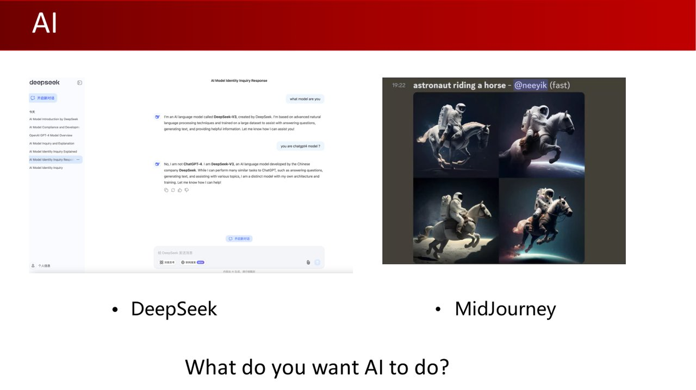
第一讲用DeepSeek和MidJourney引出一个问题：我们希望AI做什么？随后提出希望AI参与体力劳动的方向（课件p3—4）。这里讨论的是AI与物理设备结合后的任务执行能力。
语言模型可能从文字和图像中学到物理常识；完成真实任务还需要把这些知识接到传感器、执行器和反馈机制上。例如“杯子易碎”是一条知识，“用多大的力夹住它、掉落后怎样恢复”是需要实践验证的问题。
具身智能（Embodied AI）研究具有身体或行动能力的智能体，如何通过感知和与环境交互完成任务。课程主要讨论真实机器人；相关研究也常在模拟环境中进行。
2什么是机器人？先认识身体
本课以Baxter双臂机器人引入机器人概念（p6—7）。机器人通常包含机械结构、传感器、执行器和控制系统；机器人学研究它的构思、设计、制造与操作（p9）。

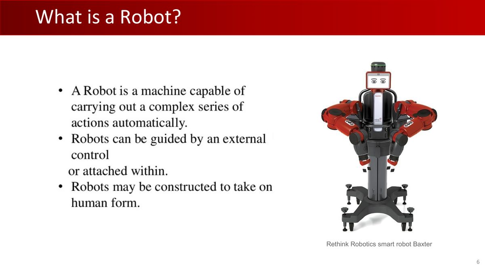
身体决定机器人能到哪里、能碰到什么、能承受多大负载。课件按移动方式列出固定式、轮式、腿式及无人机等类型（p8）；这是一种分类视角，实际产品可以组合多个类型。

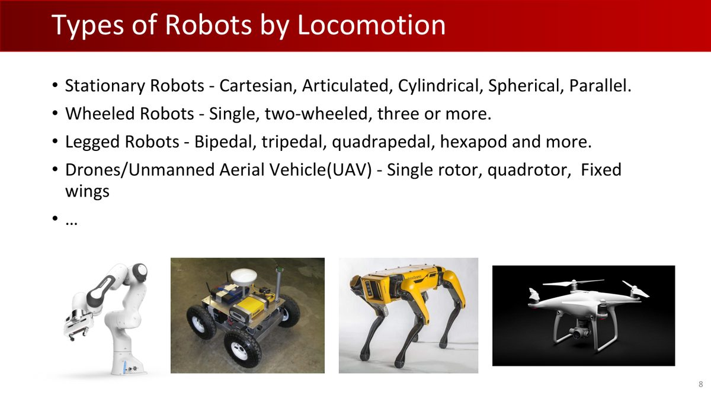
| 类型 | 例子 | 适合观察的能力 |
|---|---|---|
| 固定式 | 关节机械臂、并联机器人 | 工作空间、定位精度、负载 |
| 轮式 | 仓储移动机器人、轮式双臂机器人 | 平地移动、导航与操作结合 |
| 腿式 | 双足、四足机器人 | 平衡、落脚点、复杂地形通过 |
| 无人机 | 多旋翼、固定翼 | 飞行控制、空中感知 |

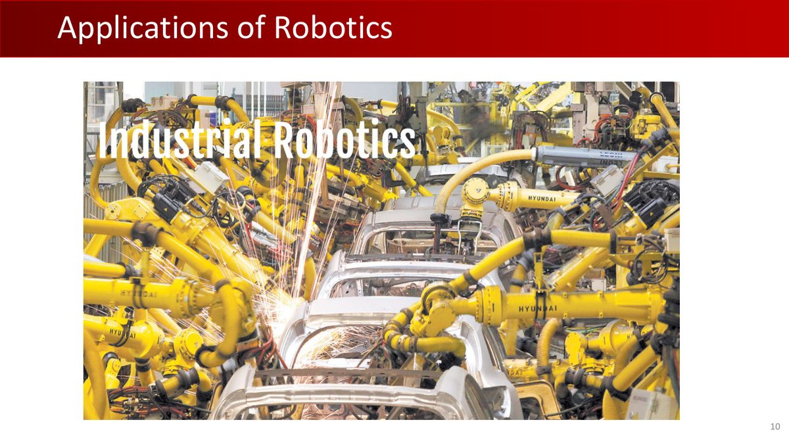
识别出杯子之后，还需要适合抓取的硬件来执行动作。硬件可达性、传感器质量、控制算法和任务模型共同影响结果。本课程前半部分建立描述身体的数学工具，后半部分讨论视觉和策略学习。
3预设任务的优势与适应局限
汽车工厂里的机械臂能够高精度、重复地完成焊接或搬运。课件p11—12用固定场景下的专用机器人举例：先设计轨迹，再执行轨迹。产品、工位或任务变化时，工程师需要重新配置和验证。

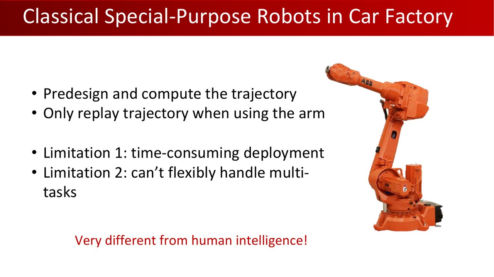
- 部署需要工程工作：示教、编程、工装和验收都需要时间。具体耗时取决于任务及现场条件。
- 跨任务适应有限：从焊接转到折衣服，需要按新任务重新考虑夹具、感知与控制方法。
底层控制反馈：关节编码器测出当前角度，控制器纠正与目标角度的误差。
任务层感知反馈：相机发现杯子被挪走，系统重新估计位置并调整抓取动作。
预设轨迹可以由闭环控制器跟踪。底层反馈帮助执行既定动作，跨任务适应则需要感知与决策系统支持，两者解决不同层次的问题。厂商关于实时运动、力反馈与AI层的说明提供了一个具体例子。
课件p13—16展示多种机器人应用，p17展示自动驾驶汽车。自动驾驶在定义的运行条件内不断感知路况、规划和控制，为理解感知—动作循环提供了例子。评估其能力时，应先确认允许的道路、天气等运行条件。
通用性指向跨任务、跨物体或跨环境的适应能力。学习方法有望减少逐任务设计的工作量，但仍需要工程集成和验证。
4通用机器人的愿景与条件
课件p18按工业机器人、自动驾驶、通用机器人组织一条教学叙事。其中“未来”指研究愿景。这几类系统服务于不同任务，也会在实际应用中并存。

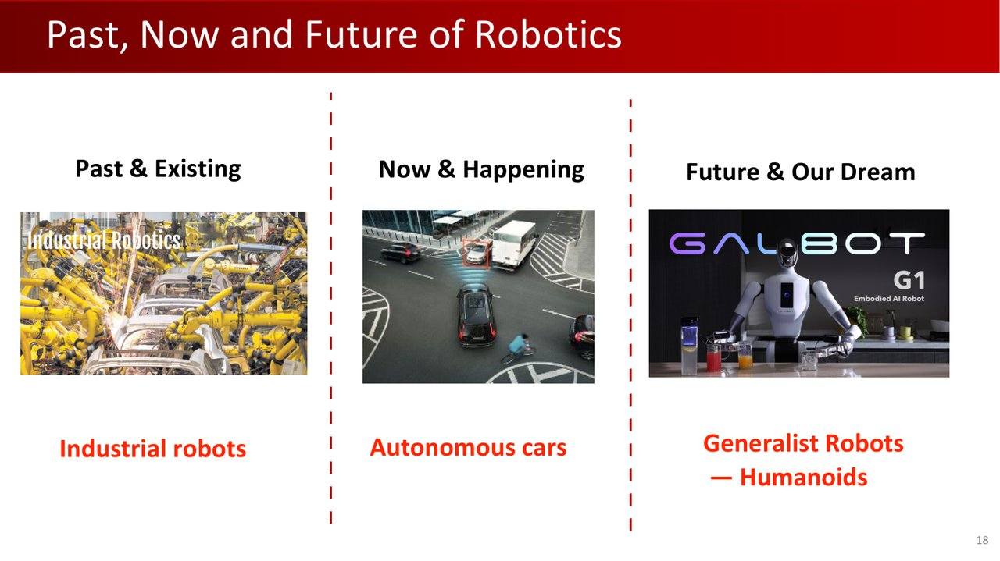

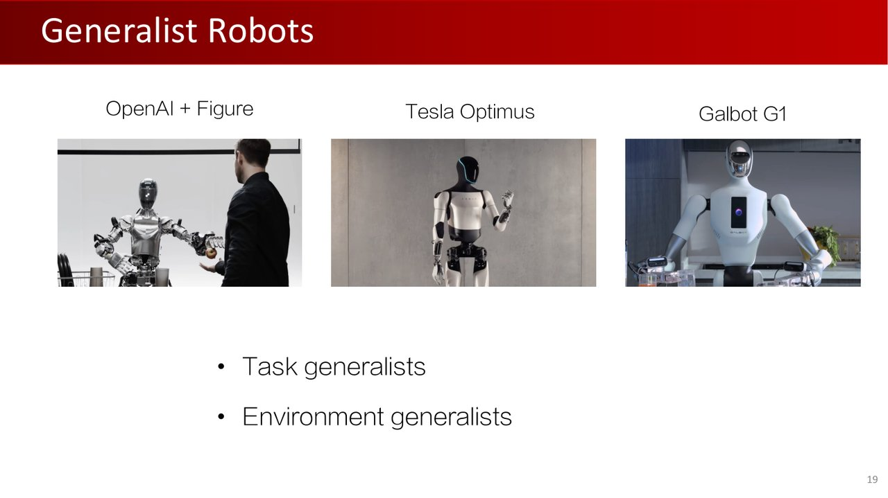
p19展示Figure、Optimus与Galbot G1，强调任务和环境两种泛化方向。它们是当时的代表性例子。理解其泛化能力，需要回到具体任务、环境和评测条件。
特征一：适合任务的高自由度身体
自由度可以理解为可独立变化的运动变量。更多自由度可能增加可达姿态和操作灵活性，也增加控制难度。关节范围、力矩、碰撞、平衡和负载都会限制能完成的动作。
课件p21—23展示高自由度本体，以Galbot G1能伸到2.4米高、降低身体捡取地面物体为例。阅读这一例子时，可以结合物体、环境和负载条件理解展示的能力。

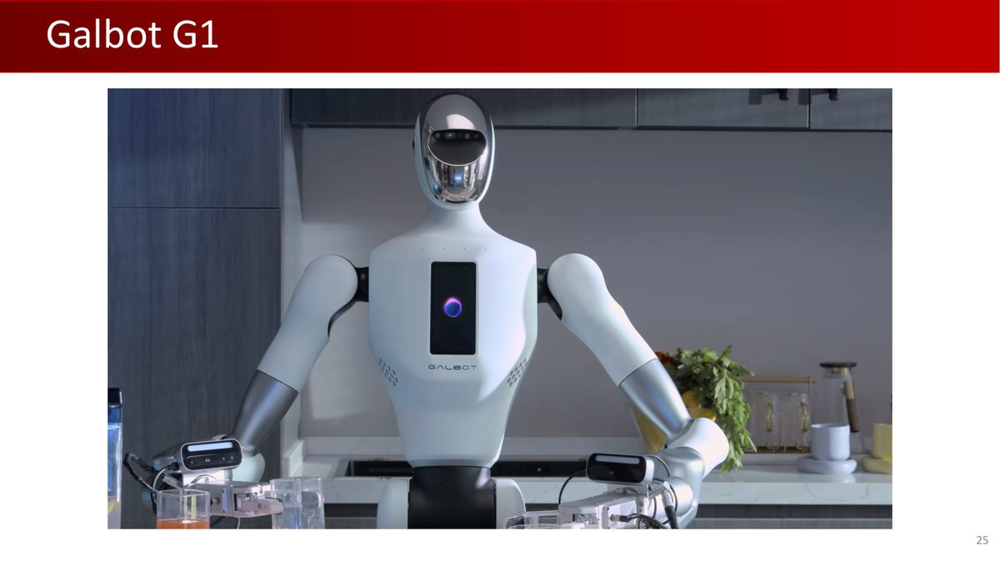
许多工具和空间适合人类使用，人形或类人双臂结构有利于复用这些设施。轮式底盘、机械臂和四足等形态同样能承担交互任务，身体形态应按任务选择。
特征二：数据驱动的技能学习
p24以数据采集与电池分拣说明从示范数据中学习动作的思路。学习方法与工程编程可以协作：模型产生动作目标，传统规划、控制与安全机制负责执行和约束。

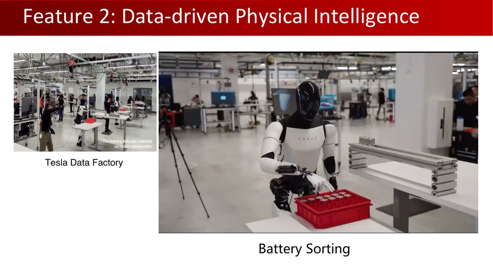

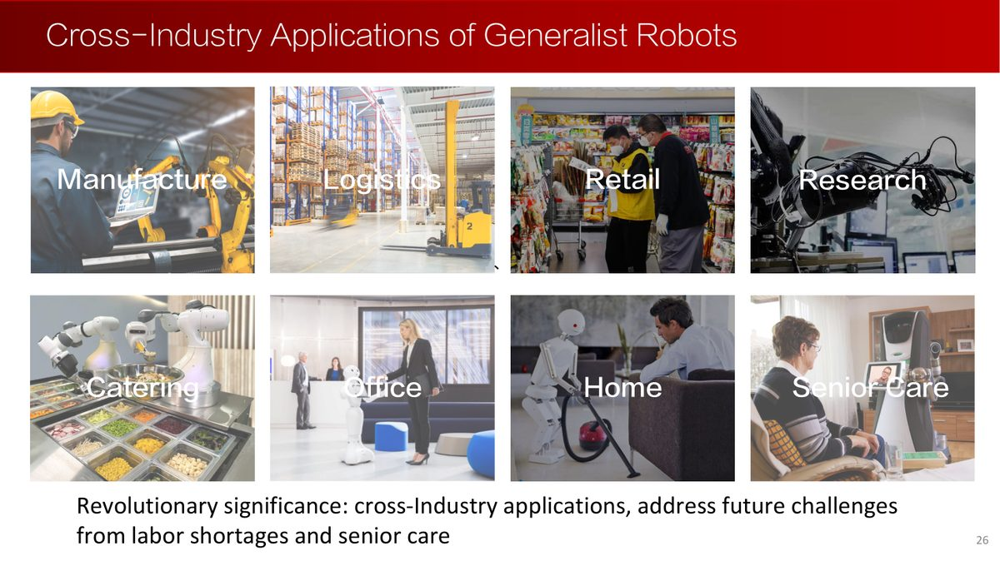
p26展示跨行业应用愿景；p27—31给出汽车工厂、零售和酒店场景的案例。阅读演示时，留意任务条件、人工辅助和持续运行情况；这些信息帮助判断演示能力能否用于实际流程。

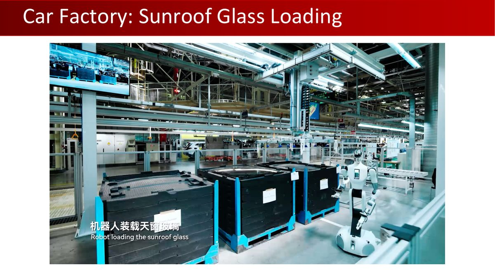
（课件 p27） 查看课件p27点击图片放大；按Esc关闭

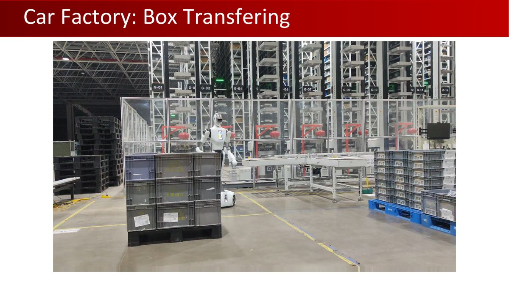
（课件 p28） 查看课件p28点击图片放大；按Esc关闭

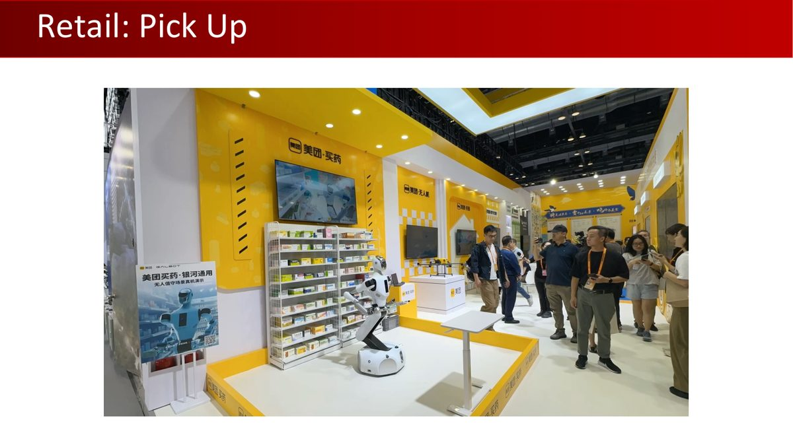
（课件 p29） 查看课件p29点击图片放大；按Esc关闭

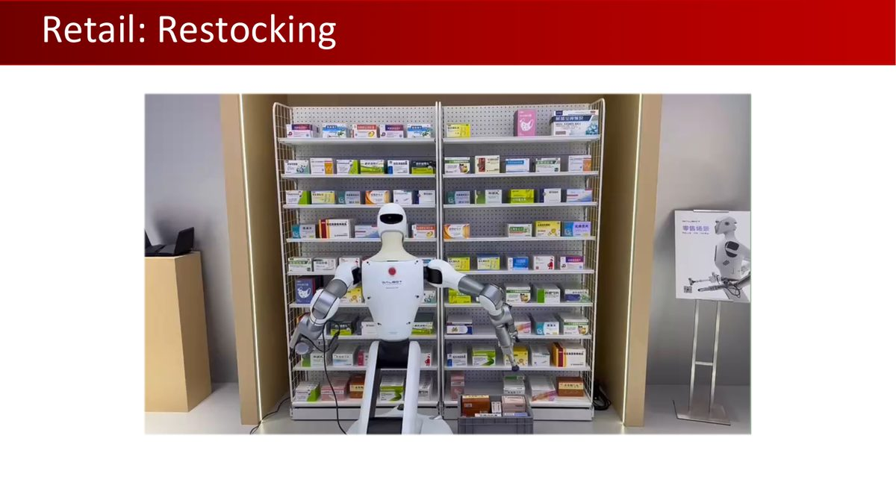
（课件 p30） 查看课件p30点击图片放大；按Esc关闭

（课件 p31） 查看课件p31点击图片放大；按Esc关闭
5核心概念：感知—动作循环
机器人拿杯子时，环境会随着动作改变。系统需要反复观察：杯子在哪里、夹爪是否接触、杯子是否被拿起，再决定下一步。课件p20将这种机制称为Perception-Action Loop。

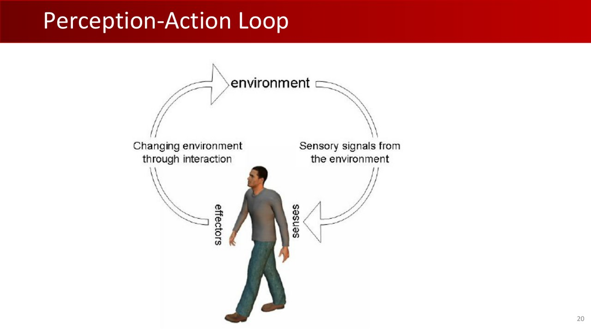
| 环节 | 拿杯子的例子 |
|---|---|
| 感知 | 相机观察杯子，编码器读取关节角度 |
| 决策 | 根据任务目标和当前状态选择抓取动作 |
| 执行 | 控制器驱动机械臂和夹爪 |
| 反馈 | 再次观察杯子是否移动、抓取是否成功，决定继续、调整或重试 |
输出动作可以是末端位姿、关节目标、夹爪开闭或底盘速度；它们再由相应控制器落实。规划器、状态估计和多个模型也可以在系统中分工协作。

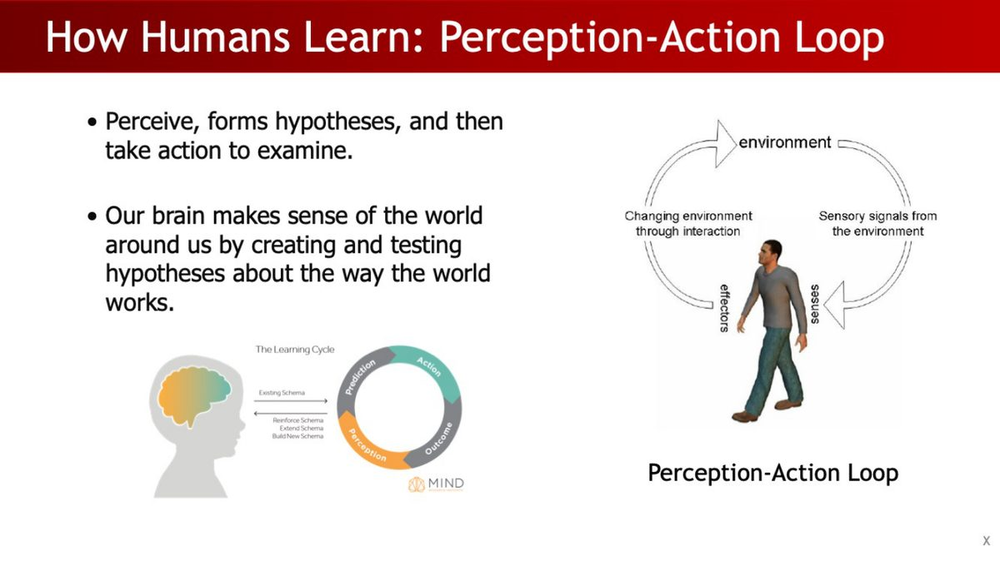
p55用人类的观察、形成假设和行动来帮助理解这一循环。类比的重点是观察如何支持行动、行动如何带来新的反馈；人脑与机器人模型的具体机制各有不同。
机器人抓空了。如果只能追加一项反馈，你会检查“杯子的新位置”，还是再次播放原轨迹？说明这项反馈如何改变下一步动作。
查看一种回答
先重新估计杯子位置，并确认定位误差、夹爪可达性等条件。若物体移动，原轨迹可能失效；若物体没移动，也需要排查手眼标定或夹爪状态。反馈的作用是支持下一步决策。
6VLA：把视觉和语言接到动作
Vision是视觉观察，Language是任务语言，Action是动作。这里的动作可以是末端位姿增量或一段控制目标，具体表示由模型与控制接口约定。把“拿起杯子”连到执行器，需要明确动作单位、参考系、控制频率和夹爪指令。
VLA（Vision-Language-Action）模型利用视觉观察和语言指令预测机器人动作。例如，输入桌面图像和“拿起红杯子”，输出一段使机器人接近并抓取目标的动作。具体实现还可能使用本体状态、触觉或历史观察。

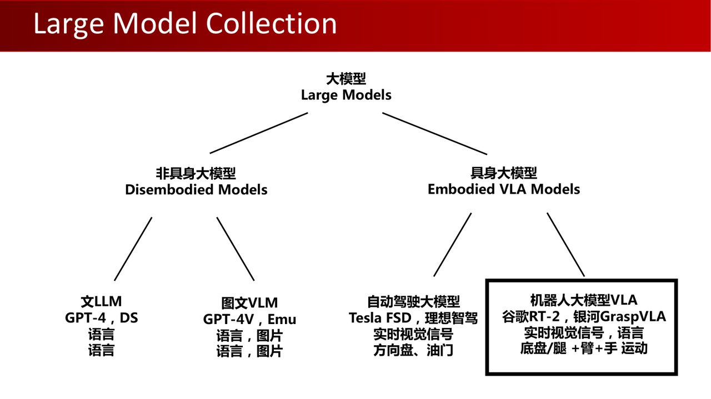
课件p32用输出类型对大模型作教学分类。实际系统中，语言模型也可以调用工具和机器人接口，视觉模型也可以作为控制系统的感知模块；这些模块可以在同一系统中配合使用。
从“说出是什么”到“决定怎样做”
p33—35对比模式识别与交互任务。识别红杯子是抓取的一部分；任务还需要选择抓取位置、控制动作，并处理失败。

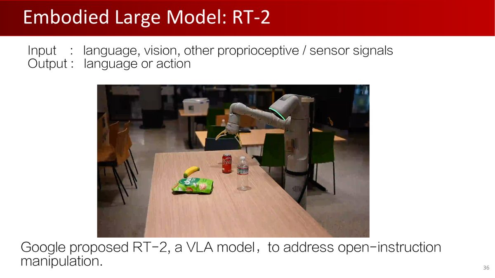
RT-2把动作编码为文本token，与视觉语言任务一起训练；执行时将token解码为控制动作。因此，阅读模型输出时，先确认动作的编码形式及其解码方式。RT-2原项目给出该模型的训练和执行方式。

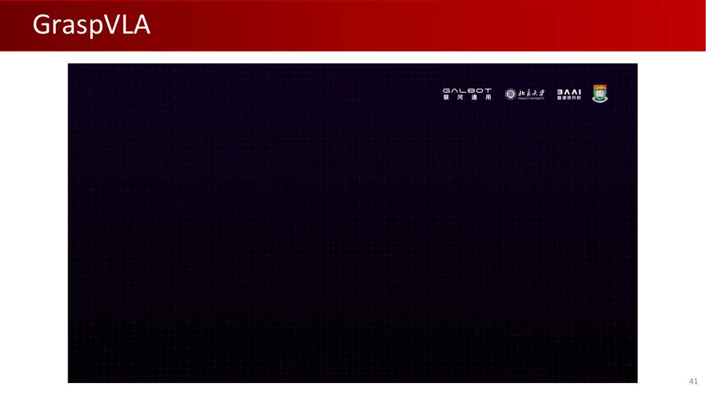
GraspVLA论文于2025-05-06在arXiv首次提交，介绍十亿帧合成抓取数据集SynGrasp-1B。项目页从干扰物、光照、空间姿态、背景、物体类别和闭环调整六个方面展示泛化。帧数描述观测规模，能力仍需结合测试任务和条件理解。
复杂推理可能以较低频率更新目标，快速动作模块则高频响应当前观察。2025年发布的Helix采用这种快慢层次设计；其他VLA可能采用不同架构。“大脑与小脑”是帮助理解这种分工的教学类比；阅读具体模型时，以论文定义的模块和更新频率为准。
课程观点：Notes 01提出“没有具身智能，就没有AGI”。这是一种关于通用智能发展路径的观点。交互有助于检验和运用物理知识。学习时可以把这一观点转化为问题：不同学习方式各能获得哪些物理知识，又怎样验证？
舞蹈、空翻等表演展示运动能力；评价VLA的泛化能力，则要查看模型的实际输入、输出、训练方式和评测任务。
7数据：采集成本、质量与泛化
一帧桌面图片只能告诉你某一时刻的外观；一次取放轨迹还包含接近、接触、搬运和放下的动作时序。训练策略时，观察与动作需要按时间对应，任务成功与失败的记录也影响它学到的行为。
机器人示范需要设备、操作人员、任务场景与时间。课件p37以13万条示范、17个月、16人、13台机器人说明成本问题。这些历史统计记录了该案例的投入，其他项目的成本需按设备、任务与采集方式估算。

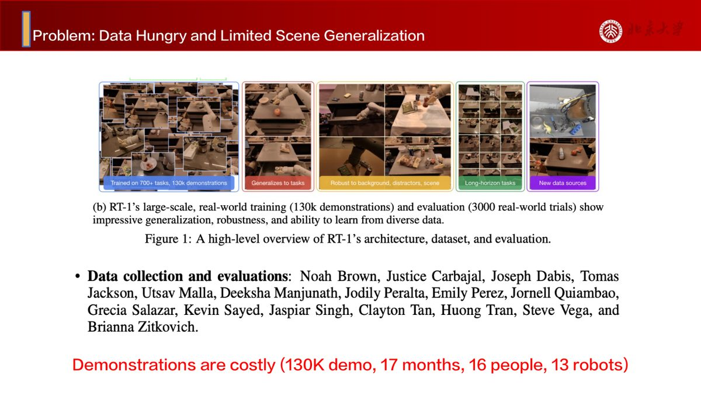
p38展示Open X-Embodiment：多个团队、数据集与机器人本体构成的真实操作数据集合。回查时可用项目名称定位数据组成与论文。

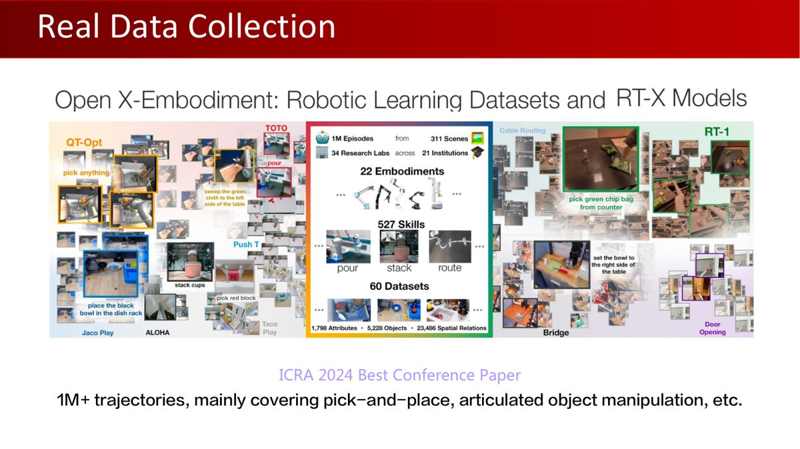

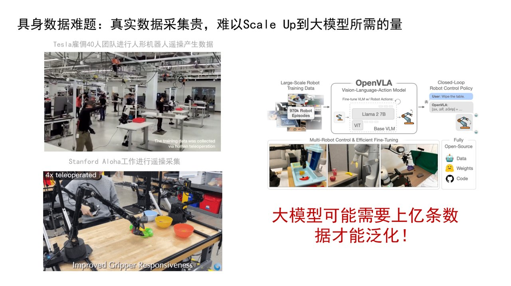
轨迹／episode：一次任务从开始到结束的观察与动作序列。
帧：某一时刻的一张图像或一组观察。
动作步：某一控制时刻的动作记录。
一条20秒轨迹以每秒10帧记录，约包含200帧图像；如果控制频率更高，动作步数又可能不同。比较百万条轨迹和十亿帧数据时，应先换算到相同单位。还要考虑任务多样性、成功失败样本、本体差异和标注质量。
课件p39提出“大模型可能需要上亿条数据才能泛化”，属于当时的规模判断。Scaling Law描述特定设置下规模与性能的经验关系，阅读时需要同时查看数据质量、任务和训练条件。

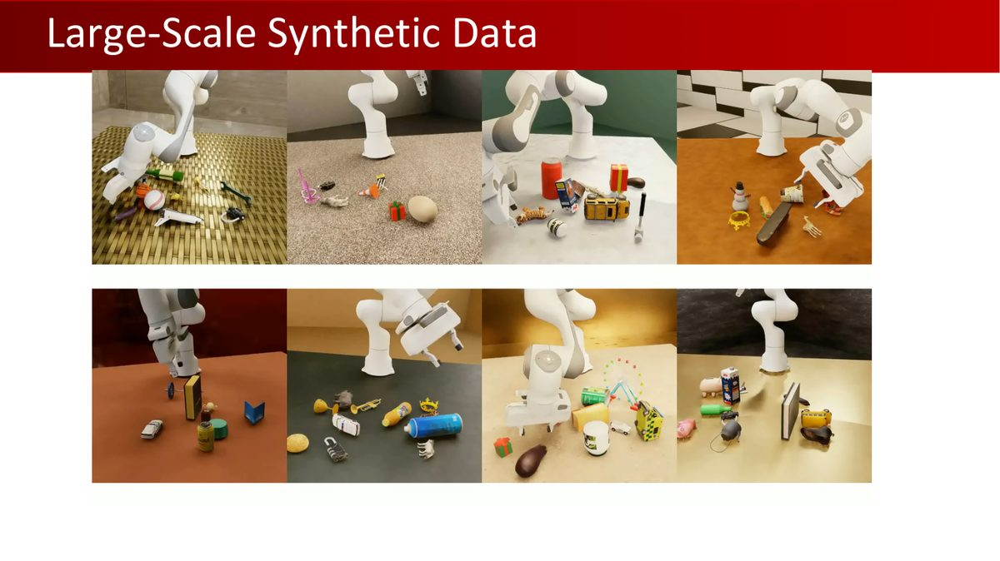

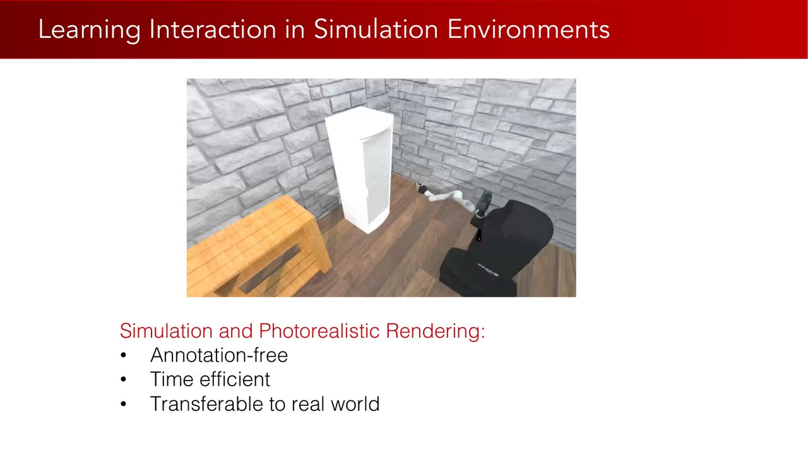
| 仿真数据的优势 | 适用条件与限制 |
|---|---|
| 可自动获得状态标签 | 可读取物体位姿等模拟状态；标签相对于仿真模型准确，仍需检查建模误差、任务定义和生成质量 |
| 可并行生成 | 减少真人逐条操作，但资产制作、计算、存储与质检仍有成本 |
| 可用于Sim2Real | 真实感渲染、域随机化、标定等有助于迁移；接触、摩擦、时延及传感器差异仍需真机验证 |
现实已解决的任务，如果改在仿真中学习，需要验证能否迁移回现实；现实尚未解决的问题，可以先在仿真里探索方法。无论从哪条路线起步，迁移结果都需要在现实中检验。
本课程将反复用到真实数据、仿真与学习方法。GraspVLA提供了合成数据路线的具体研究案例。其他任务可以结合真实示范、仿真数据及各自的迁移结果选择路线。
8怎样理解具身性与主动交互
p44—49通过设问对比传统感知任务与具身交互任务。下面用图像分类与机器人抓取，比较这门课关心的感知和交互问题。

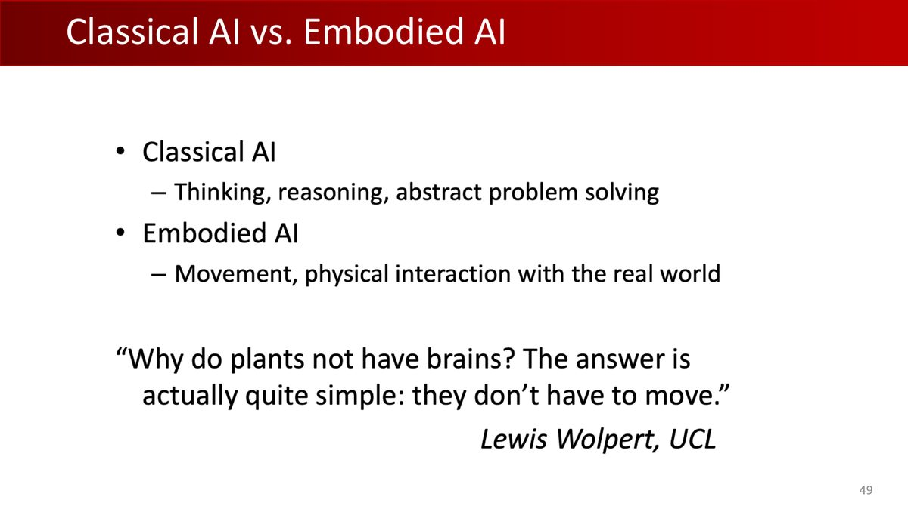
| 比较视角 | 图像分类例子 | 机器人抓取例子 |
|---|---|---|
| 输入 | 一张待分类图像 | 视觉、本体状态、任务指令与历史反馈 |
| 输出 | 类别或描述 | 影响物体和机器人状态的动作 |
| 评价 | 预测是否正确 | 是否完成任务，能否恢复失败，是否满足约束 |
| 学习 | 可采用监督或自监督等方法 | 可采用离线示范、模仿学习、强化学习等；执行时可用固定参数的策略根据反馈调整动作 |
课件p50引用图灵1950年的《Computing Machinery and Intelligence》，p51引用Held与Hein 1963年关于主动运动与视觉引导行为发展的实验。它们提供思想与实验背景。

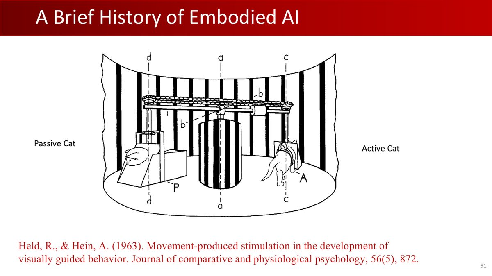
小猫实验支持主动运动经验对特定视觉引导行为的重要性，理解其结论时应保留这一研究范围。p52以直立行走、工具使用和语言帮助理解身体与智能发展的联系。

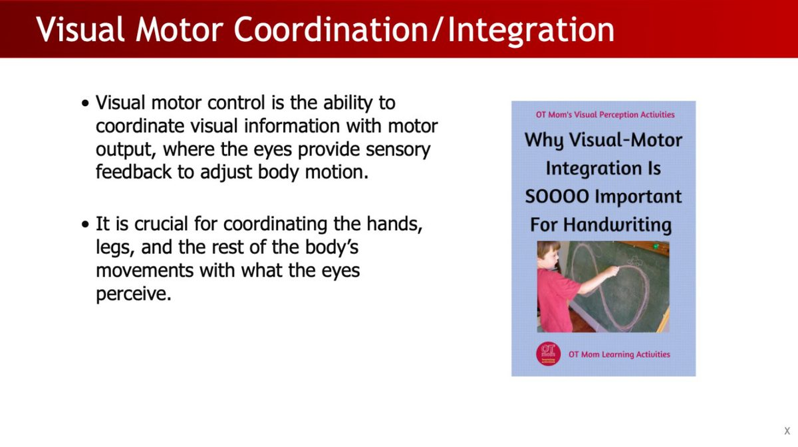

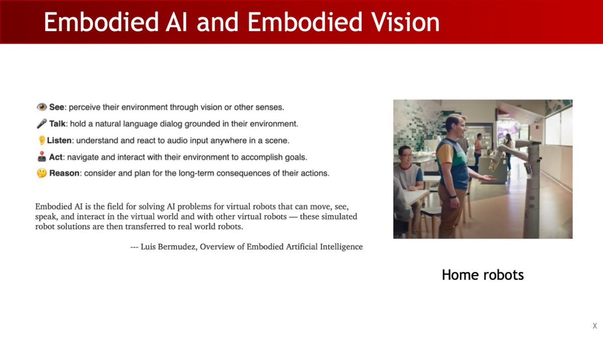
p53—54展示视觉运动协调，p56列出看（See）、说（Talk）、听（Listen）、行动（Act）与推理（Reason）五类能力。这五项概括了该页讨论的交互能力。具体机器人需要哪些能力，应由任务决定。
一台机器人按预设程序走路，另一台用离线示范训练出的策略拿杯子。能仅凭它们“在动”就断定正在学习吗？
查看回答
需要进一步查看参数是否在更新。执行动作、根据观察调整动作和更新模型参数是三个不同概念。训练可能发生在执行之前；闭环执行时参数也可以固定。
9课程全景与自学安排
第一讲p58将本课定位为具身智能前沿课程，目的是为研究建立基础。面向自学者，本教程保留知识路线，并通过前置讲解和可检查的练习支持学习。

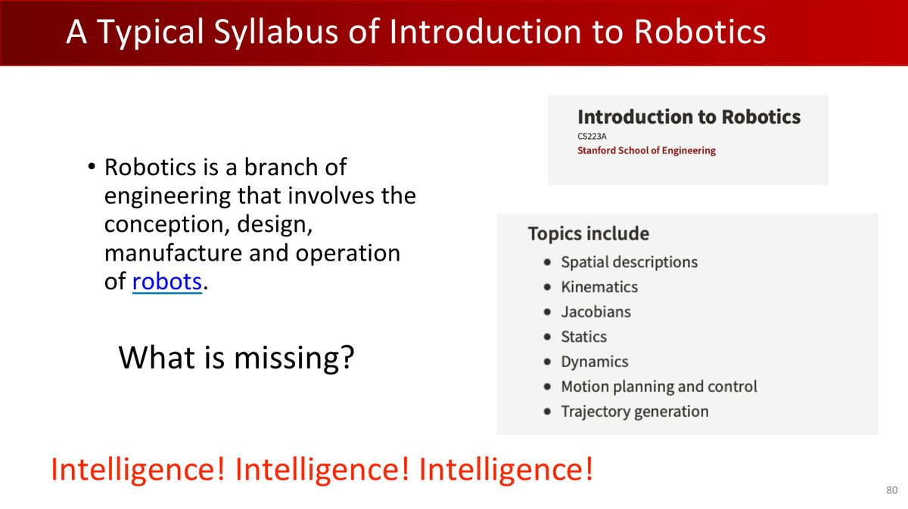
四大板块
- 机器人学基础（第2—4章）：刚体几何、正逆运动学、规划与控制。
- 机器人3D视觉（第5—7章）：深度、点云、物体位姿、跟踪和抓取；课件p76—80给出混合、透明、移动和灵巧抓取场景展示。
- 策略学习（第8—9章）：模仿学习与强化学习。
- 机器人任务与前沿（第10章）：抓取、关节物体操作、导航、移动操作、QuadWBG及多模态模型专题。
先修要求和自学支架
| 原课程要求 | 自学时怎么准备 |
|---|---|
| Python熟练；课件还列出PyTorch | 本章作业只使用NumPy等CPU依赖；先完成§11的数组、矩阵和误差练习，再实现函数 |
| 计算机视觉、深度学习；课件还列出大学力学 | 本章概念阅读可先开始，后续数学与学习章节仍需相应基础；遇到缺口按章节补学 |
| 课程作业 | 作业1保留在本章，用“前置知识→小练习→逐函数实现→自测”的顺序完成 |
首讲PDF p64写“3次作业共40%＋真实机器人实验20%＋课堂参与最多5%加分”，该页不是完整的100%成绩表。现存课程官网写“作业60%＋期中考试40%”，真实实验单独介绍。两份来源对应各自的课程安排，应分别阅读。本地自学以练习成果检查掌握程度。
p65说明作业通常给两周、迟交会扣分。官方作业1于2025-03-07公开，截止2025-03-22 23:59；这些日期记录原课堂安排，自学者可按自己的进度完成。具体见作业发布页。
学习节奏可以按“今天完成一组练习”安排。每次记录：做了哪项、输出是什么、哪里仍不懂。查术语时先看原课件、官方文档或原论文；搜索引擎用于找来源，再回到原文核对。
10本章自测：解释一个完整任务
现在用“机器人把红杯子放进托盘”回顾本章。先独立回答，再展开提示。
1．机器人需要观察哪些信息？
杯子与托盘的位置、机器人本体状态、夹爪状态，以及任务目标。具体传感器由系统设计和任务要求决定。
2．执行器闭环与任务层闭环有什么区别？
关节控制器跟踪目标角度属于底层反馈；相机发现杯子移动并触发重新规划属于任务层反馈。两者都重要，但作用层次不同。
3．VLA在这个系统里可能做什么？
根据图像、语言及其他观察预测动作；再由规划或控制系统落实。具体输出可能是末端位姿、动作序列或关节目标，取决于模型设计。
4．十亿帧数据一定比百万条轨迹多吗？
先统一单位，再比较。每条轨迹的时长、采样频率、任务分布和质量都是必要信息。
5．仿真成功后，真机还要检查什么？
几何与传感器标定、接触与摩擦差异、控制时延、任务成功与失败恢复等。这些条件需要通过真机验证。
本章原作业需要描述旋转和机械臂位姿。下一节先补这些知识，再提供小练习和实现提示。你可以在同一章内完成从入门到原作业的学习过程。
11动手实践：作业 1 · 四元数与正向运动学
这份作业完整保留在第一章。它把前面“让机器人行动”的愿景变成一个具体问题：给定机械臂各关节的角度，怎样算出每段连杆的位置和朝向？原课程面对有编程和数学基础的学生，这里先补一层入门台阶，再进入原题。你可以按“运行前置示例 → 做小练习 → 逐个实现函数 → 验证机械臂”的顺序推进，不必在第一次阅读时完成全部任务。
练习中的每个符号都有操作含义：向量保存一个方向或位置，矩阵把坐标转换到另一个坐标系，四元数保存旋转，正向运动学把这些转换沿机械臂连接起来。先看懂一个小例子，再扩大到整台机器人，会比同时背下所有公式更容易。以下小练习只帮助你掌握前置知识，原作业的学生函数仍留给你自己完成。
11.1 原题、模板与学习路线
| 原作业任务 | 分值 | 要交付的结果 |
|---|---|---|
| 旋转函数库 | 66% | 在 rotation.py 实现 11 个函数，每个 6%；处理归一化、组合旋转、旋转表示转换和插值。 |
| 正向运动学 | 34% | 在 robot_model.py 实现 RobotModel.fk，输入旋转关节角，返回所有连杆的 (L, 4, 4) 位姿数组。 |
官方实际于 2025 年 3 月 7 日发布作业，截止时间为 3 月 22 日 23:59。这里保留原题难度和分值，但自学不受原课程期限约束。环境启动成功说明工具已就绪；函数通过测试，才说明完成了相应作业检查。建议分多次学习，每次完成少量函数，并记下输入、预期输出和遇到的问题。
本章提供原题PDF、官方原始ZIP与可运行的homework01/Assignment1/学生模板。模板包括题目说明、待实现函数、测试、测试数据、Galbot左臂URDF与网格模型。材料入口与使用方法见作业1来源与使用说明，课程要求可回查官方发布页。
11.2 先把环境和工作目录准备好
本地运行需要 Python 和 NumPy；完整作业还需要 pytest、trimesh、plotly。这里使用原题指定的 Python 3.10。Windows 安装 Conda 后打开 Anaconda Prompt，用终端进入本章的 homework01 目录：可以先输入 cd /d ，再粘贴该文件夹实际路径；路径有空格时用双引号包住。看到目录中有 warmup.py 和 Assignment1 后，再执行下面命令。
conda create -n hw1 python=3.10
conda activate hw1
cd Assignment1
python -m pip install -r requirements.txt
python -c "import numpy, pytest, trimesh, plotly; print('依赖导入成功')"
python ../warmup.pycd Assignment1 很重要：原模板用相对路径读取 data/fk.npz 和机器人模型，后面的测试与可视化都应在这个工作目录执行。前置脚本在上一级，所以运行时写 ../warmup.py。它只依赖 NumPy，包含已知数值的小例子和断言，不导入原作业的待实现函数；成功时会逐项打印结果，最后提示“前置示例全部通过”。
第一次对原模板运行 pytest，出现 NotImplementedError: Implement this function 是预期结果，意思是“这个函数需要你实现”。如果提示缺模块，先检查是否激活 hw1、是否装齐四项依赖。学习时使用完整学生模板，其中包含模型和测试资产；Handin 中的两个代码文件是已填写的实现，适合最后核对思路。遇到测试失败，按输入、计算过程与预期输出逐步排查。
11.3 NumPy 入门：形状、运算、弧度和误差
NumPy 数组可以看成整齐摆放的数字容器。np.array([3., 4., 0.]) 的形状是 (3,)，表示三个分量的一维向量；np.eye(3) 的形状是 (3, 3)，表示三行三列的单位矩阵。初学时先打印 shape 再计算，能避免把四元数的四个数和三维向量的三个数混在一起。浮点数写法如 3.0，也能避免整数数组在赋小数时被截断。
* 是逐元素乘法，@ 则随输入形状表示点积或矩阵乘法。两个一维数组的点积把对应乘积相加，输出一个数；矩阵乘向量会输出一个新向量。叉积 np.cross(a, b) 输出垂直于两者的三维向量，方向遵循右手法则。模长 np.linalg.norm(a) 衡量向量长度，把向量除以非零模长得到单位向量。
import numpy as np
a = np.array([3.0, 4.0, 0.0])
b = np.array([0.0, 1.0, 0.0])
print(a.shape) # (3,)
print(a * b) # [0. 4. 0.]
print(a @ b) # 4.0
print(np.cross(a, b)) # [0. 0. 3.]
print(np.linalg.norm(a)) # 5.0
print(a / np.linalg.norm(a)) # [0.6 0.8 0.]NumPy 的三角函数使用弧度，\(180^\circ=\pi\) 弧度，\(90^\circ=\pi/2\) 弧度。用 np.deg2rad(90) 转换后，再将结果传给 np.sin。电脑的浮点运算存在微小误差，计算出的 \(\cos(\pi/2)\) 往往是接近零的小数。比较单个数用 np.isclose，比较数组用 np.allclose；浮点结果应按容差比较，逐位使用 == 要求精确相等通常不适合这类计算。
Python 中的一维数组没有强制的“行”或“列”外观，前面的数学推导仍统一按列向量理解。矩阵 (3, 3) 乘一维向量 (3,) 会得到 (3,)；两个矩阵相乘则要求左矩阵列数等于右矩阵行数。若遇到维度报错，先把每个中间结果的 shape 打印出来。转置前先核对坐标转换方向，因为转置会改变旋转矩阵的输入系与输出系。
前置练习 1：逐元素乘法、点积和归一化有什么不同？（展开答案）
对上面的 a、b，先预测 a * b、a @ b，再算单位 a 的模长。答案分别为 [0, 4, 0]、4、1。点积把三个数合成一个数，归一化保持方向、把长度改为 1。零向量没有唯一方向，不能直接除以零模长。
前置练习 2：把 90 度变成弧度，并检查 cos 是否接近零（展开答案）
angle = np.deg2rad(90.0)
assert np.isclose(angle, np.pi / 2)
assert np.isclose(np.cos(angle), 0.0, atol=1e-12)这里 atol 是绝对误差容许量。它适用于本例的已知数值检查，其他任务的阈值应按量纲与精度要求设置。
11.4 从三维旋转走到四维齐次变换
坐标总是相对于某个坐标系说的。“杯子在右边”需要先说明是谁的右边。机器人有基座坐标系，连杆也各有自己的坐标系。以下约定使用列向量：\(R_{AB}\) 把 B 系表示的向量转换为 A 系表示；\(t_{AB}\) 是 B 系原点在 A 系中的位置。因此一个点满足 \(p_A=R_{AB}p_B+t_{AB}\)。转换过程中点本身可以不动，变化的是它的数字表示。
一个合法旋转矩阵由三个互相垂直的单位轴组成，满足 \(R^TR=I\) 和 \(\det R=1\)。单位矩阵代表无旋转。绕 Z 轴按右手方向转 90 度时，局部 X 方向会指向 Y 方向。把下面的例子想成“一个连杆朝向改变后，它的局部 X 轴在基座中指向哪里”，不必先背一般转换公式。
R = np.array([[0., -1., 0.],
[1., 0., 0.],
[0., 0., 1.]])
p_B = np.array([1., 0., 0.])
t_AB = np.array([2., 0., 0.])
p_A = R @ p_B + t_AB
assert np.allclose(p_A, [2., 1., 0.])把旋转和平移放进同一个矩阵，得到齐次变换：\(T_{AB}=\begin{bmatrix}R_{AB}&t_{AB}\\0&1\end{bmatrix}\)。点补上末尾的 1，写成 \(\tilde p_B=(x,y,z,1)^T\)，于是 \(\tilde p_A=T_{AB}\tilde p_B\)。末尾的 1 让平移项能够参与运算；纯方向向量则补 0，因为位置改变不应改变方向。下方代码里的平移是最后一列，不是最后一行。
T_AB = np.eye(4)
T_AB[:3, :3] = R
T_AB[:3, 3] = t_AB
p_A_h = T_AB @ np.append(p_B, 1.0)
assert np.allclose(p_A_h, [2., 1., 0., 1.])前置练习 3：同一矩阵作用于点和方向，有何区别？（展开答案）
用上面的 T_AB 分别乘 [1, 0, 0, 1] 与 [1, 0, 0, 0]。前者得到 [2, 1, 0, 1]，后者得到 [0, 1, 0, 0]。点的位置加上平移，方向只发生旋转。
前置练习 4：两个坐标转换按什么顺序相乘？（展开答案）
从 C 系到 B 系是 T_BC，从 B 系到 A 系是 T_AB。点先经过右边的变换，因此 \(T_{AC}=T_{AB}T_{BC}\)。在 Python 中写 T_AC = T_AB @ T_BC。下标中相邻的 B 可以帮助你检查是否衔接；交换顺序通常得不到同一结果。
11.5 四元数：先理解单位、半角和表示约定
四元数把旋转保存成四个数。本题统一采用 wxyz 顺序，写成 \(q=(w,\mathbf v)\)，其中 \(\mathbf v=(x,y,z)\)。这里 q 表示旋转四元数；后面机械臂的一串关节角统一叫 qpos，后文按这两个名称区分旋转与关节配置。原题允许假设除 quat_normalize 外的输入四元数已经单位化，即 \(w^2+x^2+y^2+z^2=1\)。用四元数表示旋转时，需要满足这个单位模长条件。
绕单位轴 \(\mathbf u\) 转角 \(\theta\)，可以表示为 \(q=(\cos(\theta/2),\,\mathbf u\sin(\theta/2))\)。注意公式用的是半角，轴向量需要长度为 1。绕 Z 轴转 90 度的四元数为 \((\sqrt2/2,0,0,\sqrt2/2)\)，无旋转则为 \((1,0,0,0)\)。四元数编码旋转；向量旋转后的坐标则要通过旋转运算得到。
四元数有“双重覆盖”：q 和 -q 表示同一个三维旋转，四个分量不同不一定意味着姿态不同。因此判断转换后的结果时，经常需要允许整体反号。计算相对旋转角时用 \(\theta_{\mathrm{rel}}=2\arccos(|q_1\cdot q_2|)\)，绝对值消除了表示符号的影响；进入反余弦前再把点积限制在合法区间，防止浮点误差把 1 变成略大于 1 的数。
四元数乘法表示旋转复合，通常不满足交换律。本题按 \(q(0,\mathbf p)q^*\) 旋转向量的约定理解：若先执行 q1，再执行 q2，组合为 \(q_2q_1\)，对应矩阵 \(R_2R_1\)。右边先作用。要用两个不同轴的例子检查次序，绕同一轴的旋转可能交换后仍一样，不能充分暴露错误。
本题的“轴角”函数使用一个长度为 3 的旋转向量 \(\mathbf r=\theta\mathbf u\)，方向是旋转轴，模长是弧度角；接口不返回“一个轴加一个角”的二元组。按 docstring，本题要求 \(\|\mathbf r\|\leq\pi\)。零向量表示无旋转，这时无需强行指定唯一轴。转角为 \(\pi\) 时，轴的正反两种表示都可能正确。
前置练习 5：q 和 -q 的相对旋转角是多少？（展开答案）
对任意单位 q，有 \(|q\cdot(-q)|=1\)，相对旋转角为 \(2\arccos(1)=0\)。两者代表同一旋转。若直接比较四个分量，可能错误地把同一姿态判成不同。
前置练习 6：绕 Z 轴转 90 度的旋转向量是什么？（展开答案）
答案为 [0, 0, np.pi / 2]，模长是 \(\pi/2\)。[0, 0, 1] 只转了 1 弧度；[0, 0, 90] 把角度单位用错且超出了本题模长约束。对应四元数的非零分量却使用 \(\pi/4\) 的半角。
11.6 十一个函数：实现前先写下边界情况
先阅读每个函数的 docstring，确定输入形状、输出形状和原题约束。下面提供推导入口与边界提醒，帮助你独立实现模板中的函数。推荐先做归一化与共轭，再做乘法和向量旋转，然后处理表示转换，最后完成插值与随机采样。每实现一个函数，先用你能手算的小例子检查，再运行对应测试。
| 函数 | 实现提示与必须考虑的边界 |
|---|---|
quat_normalize | 用四维模长归一化，返回形状 (4,)。全零四元数不能代表旋转。调试时应明确识别并处理这个输入，避免除零产生 NaN。 |
quat_conjugate | 实部不变，虚部整体反号。对单位四元数，共轭就是旋转的逆；非单位四元数求逆时还需除以模长的平方。检查输出是否意外修改了原输入。 |
quat_multiply | 拆成实部和三维向量：\(w=w_1w_2-\mathbf v_1\cdot\mathbf v_2\)，\(\mathbf v=w_1\mathbf v_2+w_2\mathbf v_1+\mathbf v_1\times\mathbf v_2\)。返回四个分量。叉积的参数顺序与原公式一致。 |
quat_rotate | 把待旋转向量嵌入纯虚四元数 (0, v)，按 \(q(0,\mathbf v)q^*\) 组合，再取三维虚部。也可推导等价的向量表达式。测试单位旋转、绕 Z 轴 90 度和向量模长保持。 |
quat_relative_angle | 使用绝对点积消除 q/-q 的歧义，并裁剪到 [0, 1] 再求反余弦。结果是弧度非负标量；同一旋转应得 0，半圈相差应得 \(\pi\)。 |
quat_to_mat | 由旋转三个单位基向量的结果组成矩阵的三列，或推导标准展开式。检查矩阵是 (3, 3)、转置乘自身为 I、行列式为 1，并与 quat_rotate 对同一向量的结果一致。 |
mat_to_quat | 接近半圈旋转时，需要分支计算。若先用 \(w=\frac12\sqrt{1+\mathrm{tr}(R)}\) 再将所有虚部都除以 w，接近180度时就会遇到 w 接近0的问题。迹为正可从 w 起算；否则按最大的对角元素选择 x/y/z 中稳定的分量起算，再恢复其余分量、归一化。用绕 X、Y、Z 各转 180 度的矩阵检查分支。 |
quat_to_axis_angle | 先按双重覆盖选 w 非负的表示，使角落在 [0, \(\pi\)]；求角可用 \(2\operatorname{atan2}(\|\mathbf v\|,w)\)。虚部近零时直接返回零旋转向量，否则用单位轴乘角度。输出必须是 (3,) 且模长不超过 \(\pi\)。 |
axis_angle_to_quat | 输入三维旋转向量，先取模长作为角，再取方向作为轴，代入半角公式。零或极小模长需要独立处理，避免除以零。本题输入限定模长不超过 \(\pi\)。 |
interpolate_quat | 按最短弧做 SLERP。点积为负先将第二个四元数整体取反，并同步将点积反号；点积接近 1 时改用线性插值后归一化，避免除以极小的正弦。其余情况将点积 d 裁剪到合法范围，设球面夹角 \(\alpha=\arccos(d)\)，插值系数为 \(\sin((1-s)\alpha)/\sin\alpha\) 与 \(\sin(s\alpha)/\sin\alpha\)。s 是 ratio，不是机器人平移。检查 s=0、s=1、同向和反号表示；s=1 的结果可与原 q2 整体反号，但仍表示相同终点姿态。 |
uniform_random_quat | 需要单位四维球面 \(S^3\) 上均匀分布，可抽取四个独立标准正态数，再用四维模长归一化；四维正态的方向具有旋转对称性。均匀抽三个欧拉角或归一化均匀立方体样本，得到的旋转分布通常并不均匀。 |
插值的球面夹角 \(\alpha\) 与三维相对旋转角不是同一个量；对最短表示，两者相差一个倍数 2。接近同向时采用归一化线性插值，用于提高小夹角情况下的数值稳定性；其余情况仍使用 SLERP 公式。随机采样则要区分“每个结果是单位四元数”和“所有方向概率均匀”：前者只是合法性，后者才是此函数的考点。
前置练习 7：为什么绕 X 轴 180 度能暴露矩阵转换的错误？（展开答案）
此时 \(R=\operatorname{diag}(1,-1,-1)\)，所以 \(1+\mathrm{tr}(R)=0\)，真实四元数可取 (0, 1, 0, 0)。若用实部 w 作分母会除以零，而虚部 x 的绝对值为 1，适合从 x 分支稳定计算。绕 Y、Z 的半圈同理，需要能选相应分支。
11.7 正向运动学：让每段连杆的坐标接起来
URDF 用文字描述连杆、关节、关节原点和旋转轴。模板已经提供读取函数；你的任务是利用读取函数给出的 joint.trans、joint.rot、joint.axis 和 qpos 算位姿。这里的 fk 只处理题目约定的顺序链：第 i 个关节连接第 i 和第 i+1 个连杆。真实机器人可以有树状分支，本题按上述顺序链逐级计算即可。
令 \(T_i\) 表示第 i 个连杆到机器人基座的变换，根连杆 \(T_0=I_4\)。关节的固定安装变换为 \(O_i=[R_i^{\mathrm{origin}},t_i^{\mathrm{origin}};0,1]\)。若它是旋转关节，运动变换 \(M_i\) 由绕关节轴转角产生；若是固定关节，\(M_i=I_4\)。逐级计算 \(T_{i+1}=T_iO_iM_i\)。含义是：先在关节局部坐标中运动，再转换到父连杆，最后转换到基座。
绕单位轴 \(\mathbf u\) 转角 \(\theta\) 的罗德里格斯公式为：
其中 \([\mathbf u]_\times=\begin{bmatrix}0&-u_z&u_y\\u_z&0&-u_x\\-u_y&u_x&0\end{bmatrix}\)。轴必须单位化，零轴要检查；\(\mathbf u\mathbf u^T\) 是外积，可用 np.outer。公式的叉乘矩阵符号与右手旋转一致，实现时按右手规则核对符号。
写输出数组时，可以先创建 L 个单位齐次矩阵，再逐个覆盖连杆位姿；若从全零数组开始，则每次构造变换都要正确设置右下角的 1。最后检查根连杆始终为单位变换、每个结果底行均为 [0, 0, 0, 1]，并确认读到的角度数等于 qpos 长度。在全零关节角下，连杆长度和固定安装偏移仍然存在，它们正是机械臂在零姿态时展开的结构。
为了避免两种索引混用，遍历所有关节时用 joint_idx，读取旋转角时用独立的 qpos_idx。固定关节也有安装平移和旋转，仍需累乘它的变换。固定关节不消耗关节角，所以只有遇到 RevoluteJoint 才读取并递增 qpos_idx。模板的 qpos 长度是旋转关节数，而不是全部关节数。
# 这是算法流程，不是可直接粘贴运行的完整代码。
# O_i、M_i 需按上文定义实际构造。
T_0 = 单位 4x4 矩阵
qpos_idx = 0
对每个关节 joint_idx:
O_i = 该关节的固定安装变换
如果是旋转关节:
theta = qpos[qpos_idx]
M_i = 绕单位关节轴旋转 theta 的齐次矩阵
qpos_idx += 1
否则:
M_i = 单位 4x4 矩阵
T_(joint_idx+1) = T_joint_idx @ O_i @ M_i前置练习 8：转过 90 度后，固定工具沿局部 X 伸出 1 米，末端在哪？（展开答案）
假设没有其他平移，第一段绕 Z 轴转 90 度，工具再沿这段连杆的局部 X 平移 1 米。累乘是 T_base_link @ T_link_tool，得到基座中 [0, 1, 0]。工具没有新角度，仍必须累乘固定变换。这个已知例子已放进 warmup.py；可先运行观察，再将同样的思路用到原机械臂。
11.8 逐项自测、可视化与排错
在 Assignment1 目录逐函数测试，可以让尚未实现的其他函数暂时不干扰当前学习。pytest 的 -k 根据测试名称筛选。部分后续函数依赖前面的实现，所以要按依赖逐步推进。最后再运行完整测试，原题的自测标准是 12 passed；它表示通过本题提供的示例检查。进一步理解实现，可结合边界输入与数学推导核对。
python -m pytest test_rotation.py -k quat_normalize -q
python -m pytest test_rotation.py -k quat_conjugate -q
python -m pytest test_rotation.py -k quat_multiply -q
python -m pytest test_fk.py -q
python -m pytest -q
python robot_model.py可视化中浅绿色网格为标准结果，棕色网格为你的结果；红、绿、蓝坐标轴分别代表X、Y、Z。示例用robot_model.fk(q)计算与标准结果相同关节配置下的位姿。图形默认在浏览器显示，未弹出时查看终端提示；数值正确性以测试为准。
| 症状 | 优先检查 |
|---|---|
| 找不到 requirements 或 data/*.npz | 工作目录是否进入完整模板 Assignment1；模型、数据目录是否完整，是否只下载了两个代码文件。 |
| NotImplementedError | 当前测试调用的函数是否仍有学生 TODO；这是模板提示你继续实现函数。 |
| NaN、除零或形状不匹配 | 模长与单位轴、零旋转、180 度分支，以及数组是 (3,) 还是 (4,)；点积进入反三角函数前是否裁剪。 |
| FK 从某个连杆开始整体错误 | 测试会报告第一个不匹配连杆；从其关节起核对安装变换乘法次序、固定关节、qpos_idx 和角度单位。 |
| 随机四元数偶发测试不稳定 | 先检查采样分布和单位模长，再复查统计测试；结合采样方法的数学依据判断结果，再分析测试的随机波动。 |
完成后保留三样学习证据：通过测试的输出、机械臂可视化截图，以及你对“旋转表示如何接成坐标变换”的一段解释。若卡住，先用本节小例子缩小问题，再阅读原文件 docstring。最后才对照公开仓库作者的已完成实现；它不是课程组官方标准答案。自学可按自己的进度进行，用这些记录检查掌握程度。能解释每步输入输出，比一次复制所有答案更有价值。
附A术语速查
| 术语 | 解释 |
|---|---|
| 具身智能（Embodied AI） | 研究有身体或行动能力的智能体如何通过感知和与环境交互完成任务；可在真实或模拟环境中研究 |
| VLA | Vision-Language-Action；利用视觉、语言等观察预测动作的一类模型，不规定唯一动作表示或架构 |
| 感知—动作循环 | 观察→决策→执行→再次观察，利用反馈调整后续动作 |
| 通用性 | 跨任务、跨物体或跨环境的适应能力；应明确评测范围 |
| 轨迹重放 | 按预先设计的轨迹执行；底层仍可有反馈控制 |
| Scaling Law | 特定数据、模型和训练条件下，规模与性能关系的经验规律 |
| 合成数据／Sim2Real | 利用模拟等方法产生数据；将仿真中得到的能力迁移到现实，并需要验证差异 |
| 轨迹／帧 | 轨迹是一段任务序列；帧是某一时刻的观察，比较时先统一单位 |
| 单位四元数 | 模长为1的四元数可表示3D旋转；本作业使用wxyz，q与−q表示同一旋转 |
| 轴角向量 | 方向是旋转轴，长度是旋转角（弧度）；本作业使用长度不超过π的3维向量 |
| FK／正向运动学 | 给定模型与关节角，计算连杆在基坐标系中的位姿 |
| URDF | 用XML描述机器人连杆、关节及它们的几何关系的格式 |
| 遥操作 | 人通过远程输入控制机器人，可用于采集操作示范 |
| 训练／推理 | 训练更新模型参数；推理使用模型产生结果。闭环执行不一定在线训练 |
附B课件 89 页完整索引
页码按PDF中的物理页序（1—89）计数，不同于课件页角印刷的号码；例如PDF第60页印刷为72。索引用于回查资料；视频页提供静态画面与可识别文字。点击页码打开本地PDF，点击教程位置跳转到讲解。
| 页码 | 页面内容 | 在教程中的位置 |
|---|---|---|
| p1 | 封面：课程名、教师、Lecture 1 - Overview | 封面区 |
| p2 | About Me：王鹤（北大 CFCS 助理教授、Galbot 创始人&CTO、智源具身智能中心主任、斯坦福博士 2021、清华本科 2014） | 封面与来源介绍；完整履历见原课件p2 |
| p3 | AI 应用（DeepSeek、MidJourney）：「What do you want AI to do?」 | §1 |
| p4 | AI 最佳方向：We need AI to do physical labor works! | §1 |
| p5 | 过渡页：From Robotics to Embodied AI | §2 开头（叙事线） |
| p6 | What is a Robot?（Baxter 机器人） | §2 |
| p7 | What is a Robot?（图注致谢 Kuan Fang） | §2（Baxter 图注） |
| p8 | 机器人按移动方式分类（固定/轮式/腿式/无人机） | §2 |
| p9 | What is Robotics? 机器人学定义 | §2 |
| p10 | 机器人的应用（图集） | §2 |
| p11 | 汽车工厂中的经典专用机器人（标题页） | §3 |
| p12 | 预设计算轨迹+重放；两大局限；与人类智能不同 | §3 |
| p13 | 机器人的应用（图集，工业） | §3（应用图集说明） |
| p14 | 机器人的应用（图集） | §3（应用图集说明） |
| p15 | 机器人的应用（图集） | §3（应用图集说明） |
| p16 | 机器人的应用（图集） | §3（应用图集说明） |
| p17 | 应用：自动驾驶汽车 | §3 |
| p18 | 机器人的过去、现在与未来（工业→自动驾驶→通用人形） | §4 |
| p19 | 通用机器人：OpenAI+Figure、Tesla Optimus、Galbot G1（任务/环境双通用） | §4 |
| p20 | Perception-Action Loop | §5 |
| p21 | 特征一：高自由度本体 | §4（特征一） |
| p22 | 特征一：高自由度本体（续） | §4（特征一） |
| p23 | 轮式人形 Galbot G1：站起 2.4 米、弯腰捡地面物体 | §4（特征一） |
| p24 | 特征二：数据驱动物理智能（Tesla Data Factory、电池分拣） | §4（特征二） |
| p25 | Galbot G1（大图） | §4（特征一配图） |
| p26 | 通用机器人跨行业应用（8 宫格）+ 革命性意义 | §4 |
| p27 | 应用案例：汽车工厂天窗玻璃装载 | §4（案例画廊） |
| p28 | 应用案例：汽车工厂箱子转运 | §4（案例画廊） |
| p29 | 应用案例：零售取货 | §4（案例画廊） |
| p30 | 应用案例：零售补货上架 | §4（案例画廊） |
| p31 | 应用案例：酒店前台接待 | §4（案例画廊） |
| p32 | 大模型家族：非具身（LLM/VLM）vs 具身（FSD/VLA：RT-2、GraspVLA） | §6 |
| p33 | 计算机视觉擅长什么：互联网数据上的模式识别 | §6 |
| p34 | Vision-Language 基础模型 | §6 |
| p35 | 计算机视觉不擅长什么：与环境交互完成任务（Embodied AI） | §6 |
| p36 | 具身大模型 RT-2：输入语言/视觉/本体信号，输出语言或动作 | §6 |
| p37 | 数据饥饿：130K demo = 17 个月 × 16 人 × 13 机器人 | §7 |
| p38 | Open X-Embodiment真实操作数据集合；课件注明ICRA 2024最佳会议论文、1M+轨迹 | §7 |
| p39 | 数据瓶颈（中文）：Tesla 40 人遥操、Stanford Aloha、需上亿条数据 | §7 |
| p40 | 大规模合成数据 | §7 |
| p41 | GraspVLA（银河通用抓取大模型） | §6 |
| p42 | 仿真环境学习：标注免费、高效、可迁移真实世界 | §7 |
| p43 | 在仿真还是现实中学？（辩证判断标准） | §7 |
| p44 | 标题页：Embodied AI | §8 开头 |
| p45 | 标题页：Classic AI | §8 开头 |
| p46 | 设问页：Problems? | §8 开头 |
| p47 | Embodied Agents（具身智能体） | §8 |
| p48 | Embodiment（具身性） | §8 |
| p49 | Classical AI vs. Embodied AI 对比 | §8 |
| p50 | 图灵《Computing Machinery and Intelligence》（1950） | §8 |
| p51 | 具身智能简史：Held & Hein (1963) 小猫实验（被动猫 vs 主动猫） | §8 |
| p52 | 人类智能进化三钥匙：直立行走、使用工具、语言 | §8 |
| p53 | 视觉运动协调（Visual Motor Coordination/Integration） | §8 |
| p54 | 视觉运动协调示例：眼手协调（Eye-Hand Coordination） | §8 |
| p55 | 人类如何学习：感知-动作循环（假设-行动-检验） | §5 |
| p56 | Embodied AI and Embodied Vision：五能力（See/Talk/Listen/Act/Reason） | §8 |
| p57 | 过渡页：Course Logistics | §9 开头 |
| p58 | 课程目标：具身智能前沿课，奠定研究基础 | §9 开头 |
| p59 | 授课信息（教师/助教/时间地点） | §9.2（参照） |
| p60 | 先修要求：深度学习、计算机视觉、大学力学；Python、PyTorch | §9.2 |
| p61 | 课程网站（pku-epic.github.io/Intro2EAI_2025） | §9.2 + 附录 C |
| p62 | 参考资源：花书、CS231N、CS285、CSE291（无指定教材） | §9.2 + 附录 C |
| p63 | 学习方法：Just google it! Search in wikipedia! | §9.2 |
| p64 | 成绩构成：3 作业 40% + 真实实验 20% + 参与加分 5% | §9（初版课件与官网考核差异） |
| p65 | 作业政策：2 周完成，迟交扣分，超 2 天零分 | §9.2 |
| p66 | 微信群通知 | §9.2（自学可忽略） |
| p67 | 过渡页：Course Organization | §9.1 开头 |
| p68 | 传统机器人课大纲缺什么：Intelligence! Intelligence! Intelligence! | §9.1 |
| p69 | 板块一：Intro to Robotics（见官网 schedule） | §9.1 |
| p70 | 主题：刚体几何建模机器人 | §9.1（板块一） |
| p71 | 主题：机器人正逆运动学 | §9.1（板块一） |
| p72 | 主题：经典规划与控制 | §9.1（板块一） |
| p73 | 板块二：Robot 3D Vision | §9.1 |
| p74 | 主题：深度与点云感知 | §9.1（板块二） |
| p75 | 主题：物体位姿估计与可泛化追踪 | §9.1（板块二） |
| p76 | 成果展示：Mixed Scene（混合场景） | §9.1（板块二） |
| p77 | 成果展示：Transparent Scene（透明物体场景） | §9.1（板块二） |
| p78 | 成果展示：Galbot Mobile Grasping（移动抓取） | §9.1（板块二） |
| p79 | 成果展示：Dexterous Grasp Diffusion Model（灵巧抓取扩散模型） | §9.1（板块二） |
| p80 | 视频演示页（4 段灵巧抓取演示视频） | §9.1（板块二成果） |
| p81 | 板块三：Policy Learning | §9.1 |
| p82 | 主题：无模型强化学习（on-policy / off-policy） | §9.1（板块三） |
| p83 | 主题：模仿学习 | §9.1（板块三） |
| p84 | 板块四：Robotic Tasks | §9.1 |
| p85 | 主题：物体抓取、关节物体操作（DexGraspNet） | §9.1（板块四） |
| p86 | 主题：导航与移动操作 | §9.1（板块四） |
| p87 | 专题：QuadWBG | §9.1（板块四后） |
| p88 | 专题课表：多模态大模型 I（CLIP、GPT-4v/4o）、多模态大模型 II（模块化通用操作系统与端到端 VLA） | §9.1（板块四后） |
| p89 | 结尾页：下集预告 Lecture 2 - The Basics of Robotics | 页脚（下一章预告） |
含图像文字的页面可在逐页中文翻译中阅读；视频页面保留静态画面及可识别文字，理解动作过程时，还需观看原视频。
附C参考资源与本地材料
资料时间基线：2026-10-04。网络页面可能继续变化；阅读时注意页面发布时间与版本。
- 课程官网（现存先修、考核）
- 课程作业1发布页
- Notes 01提纲（观点与分类）
- 第一讲原课件（Git LFS）
- 官方作业1 PDF
- 官方完整作业1 ZIP
- RT-2项目
- GraspVLA论文（2025-05-06首次提交）
- GraspVLA项目（六个泛化方面、十亿帧数据）
- Helix（2025-02-20，多机器人演示）
- Helix 02（2026-01-27，全身控制）
- 工业机器人底层反馈与AI层例子
- 历史背景：2025年政府工作报告
- 历史背景：国家统计局2025年统计公报（表3）
- GNU许可FAQ
- 2026年政府工作报告
- 2026年度人形机器人与具身智能实景实训专项行动
- 国家统计局2026年1—8月工业机器人产量
- Helix 2.5（2026-09-17）
本地学习材料
原课件p62推荐的补充资源
《Deep Learning》（Goodfellow等，2016）、Stanford CS231N、Berkeley CS285、UCSD CSE291。它们适合按学习中遇到的问题选读。